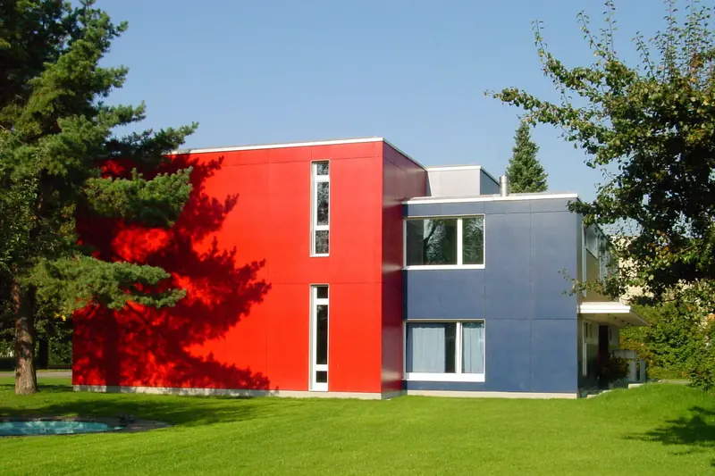

Projekt 200 · Lernen
Kindergarten Hegger Schwerzenbach
Umbau des Kindergartens
Im Objekt sind drei Kindergärten, das Schulsekretariat und im Untergeschoss Räume für Erwachsenenkurse untergebracht.

- Status
- Realisiert
- Fertigstellung
- 2002
- Bauherr
- Primarschulpflege Schwerzenbach
- Kosten
- 1'073'828 Fr. (BKP 2), 1'319'581 Fr. (BKP 1-9)
- Kenndaten
- 3'058 m3 (GV), 903 m2 (GF) (SIA 416)
- Kennwerte
- 351 Fr./m3 (BKP 2/m3 GV), 1'189 Fr./m2 (BKP 2/m2 GF)
- Bauzeit
- März-August 2002, 4 Monate
- Adresse
- Hegger 4, 8603 Schwerzenbach
Raumprogramm
Im Objekt sind drei Kindergärten, das Schulsekretariat und im Untergeschoss Räume für Erwachsenenkurse untergebracht. Die vertikale Organisation wurde durch die zu unterschiedlichen Zeiten zu nutzenden Funktionsteile beeinflusst. So sind im Obergeschoss zwei Kindergärten sowie das durch einen seperaten Zugang erschlossene Schulsekretariat untergebracht. Im Untergeschoss sind neben den Kursräumen auch das Schularchiv und Magazine für die Kindergärten und den Hauswart eingerichtet. Der bisherige im Ergeschoss liegende Kindergarten wurde sanft renoviert. Die Klassenräume sind mit den, auf tieferem Niveau liegenden, Gruppenräumen verbunden. Das ursprüngliche Bauwerk mit den zwei dominierenden Schulräume wurden durch die farbig prägnant wirkenden Kuben in die Aufstockung integriert.
Tageslichtnutzung
Ein grosszügiges Oberlicht im Treppenauge bringt viel Tageslicht in das Innere der Eingangshalle. Der Zugang zu den oberen Schulräumen erfolgt durch den mit Tageslicht durchfluteten Vorplatz.
Tragwerk
Grosse Spannweiten von über 9 Metern wurden mit der gewählten, vorfabrizierten Holzelementbauweise elegant überbrückt.
Projektteam
- Architekt
- apb architekten ag, Uster
- Projektleiter
- Peter Brader
- Bauingenieur
- Hausert + Gebert, Fällanden
- Elektroingenieur
- Fritz Roth, Hinteregg
- HLKKS
- Gerber Haustechnik, Schwerzenbach
- Holzbau
- Hector Egger Holzbau AG, Schwerzenbach